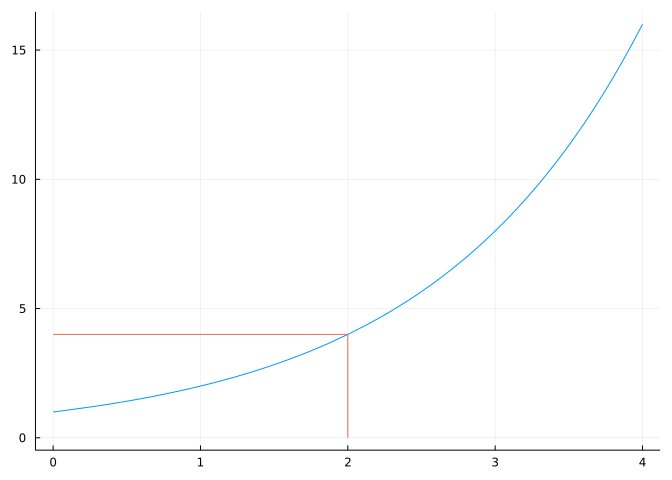
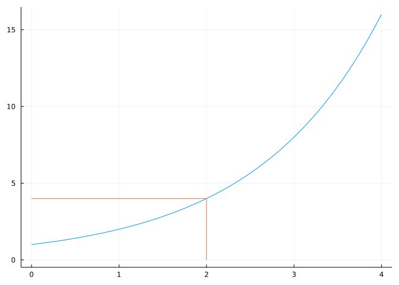
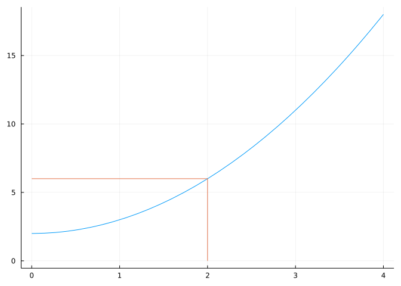
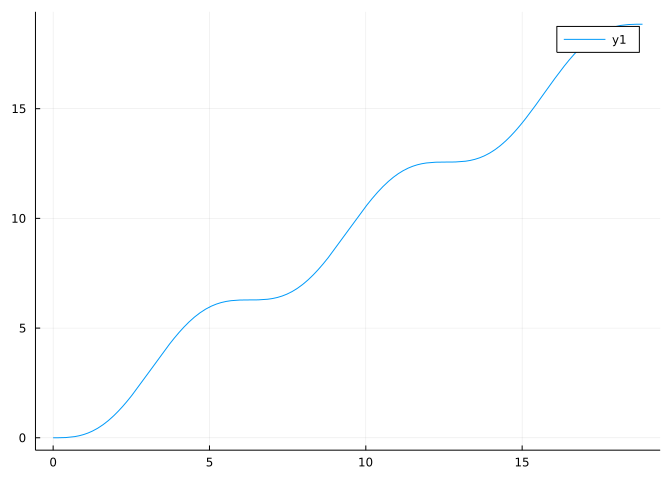
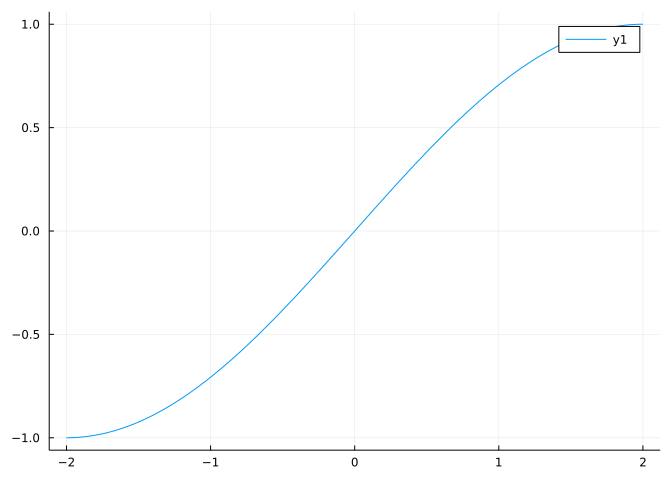
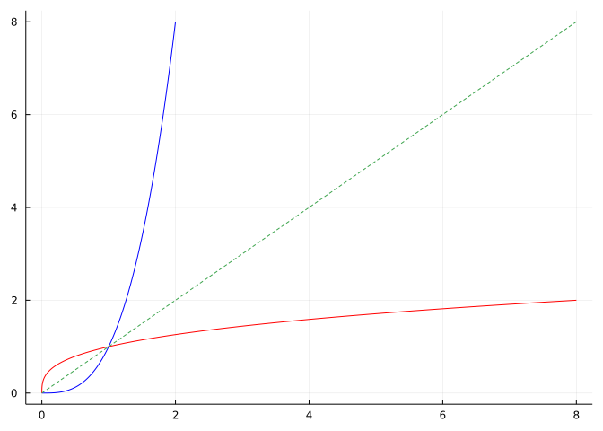

f(x) = 2^x
plot(f, 0, 4, legend=false)
plot!([2,2,0], [0,f(2),f(2)])
In this section we will use these add-on packages:
using CalculusWithJulia
using PlotsA (univariate) mathematical function relates or associates values of \(x\) to values \(y\) using the notation \(y=f(x)\). A key point is a given \(x\) is associated with just one \(y\) value, though a given \(y\) value may be associated with several different \(x\) values. (Graphically, this is the vertical line test.)
We may conceptualize such a relation in many ways: through an algebraic rule; through the graph of \(f;\) through a description of what \(f\) does; or through a table of paired values, say. For the moment, let’s consider a function as rule that takes in a value of \(x\) and outputs a value \(y\). If a rule is given defining the function, the computation of \(y\) is straightforward. A different question is not so easy: for a given value \(y\) what value - or values - of \(x\) (if any) produce an output of \(y\)? That is, what \(x\) value(s) satisfy \(f(x)=y\)?
If for each \(y\) in some set of values there is just one \(x\) value, then this operation associates to each value \(y\) a single value \(x\), so it too is a function. When that is the case we call this an inverse function.
Why is this useful? When available, it can help us solve equations. If we can write our equation as \(f(x) = y\), then we can “solve” for \(x\) through \(x = g(y)\), where \(g\) is this inverse function.
Let’s explore when we can “solve” for an inverse function.
Consider the graph of the function \(f(x) = 2^x\):
f(x) = 2^x
plot(f, 0, 4, legend=false)
plot!([2,2,0], [0,f(2),f(2)])
The graph of a function is a representation of points \((x,f(x))\), so to find \(f(c)\) from the graph, we begin on the \(x\) axis at \(c\), move vertically to the graph (the point \((c, f(c))\)), and then move horizontally to the \(y\) axis, intersecting it at \(f(c)\). The figure shows this for \(c=2\), from which we can read that \(f(c)\) is about \(4\). This is how an \(x\) is associated to a single \(y\).
If we were to reverse the direction, starting at \(f(c)\) on the \(y\) axis and then moving horizontally to the graph, and then vertically to the \(x\)-axis we end up at a value \(c\) with the correct \(f(c)\). This operation will form a function if the initial movement horizontally is guaranteed to find no more than one value on the graph. That is, to have an inverse function, there can not be two \(x\) values corresponding to a given \(y\) value. This observation is often visualized through the “horizontal line test” - the graph of a function with an inverse function can only intersect a horizontal line at most in one place.
More formally, a function is called one-to-one if for any two \(a \neq b\), it must be that \(f(a) \neq f(b)\). Many functions are one-to-one, many are not. Familiar one-to-one functions are linear functions (\(f(x)=a \cdot x + b\) with \(a\neq 0\)), odd powers of \(x\) (\(f(x)=x^{2k+1}\)), and functions of the form \(f(x)=x^{1/n}\) for \(x \geq 0\). In contrast, all even functions are not one-to-one, as \(f(x) = f(-x)\) for any nonzero \(x\) in the domain of \(f\).
A class of functions that are guaranteed to be one-to-one are the strictly increasing functions (which satisfy \(a < b\) implies \(f(a) < f(b)\)). Similarly, strictly decreasing functions are one-to-one. The term strictly monotonic is used to describe either strictly increasing or strictly decreasing. By the above observations, strictly monotonic function will have inverse functions.
The function \(2^x\), graphed above, is strictly increasing, so it will have an inverse function. That is we can solve for \(x\) in an equation like \(2^x = 9\) using the inverse function of \(f(x) = 2^x\), provided we can identify the inverse function.
If we know an inverse function exists, how can we find it?
If our function is given by a graph, the process above describes how to find the inverse function.
However, typically we have a rule describing our function. What is the process then? A simple example helps illustrate. The linear function \(f(x) = 9/5\cdot x + 32\) is strictly increasing, hence has an inverse function. What should it be? Let’s describe the action of \(f\): it multiplies \(x\) by \(9/5\) and then adds \(32\). To “invert” this we first invert the adding of \(32\) by subtracting \(32\), then we would “invert” multiplying by \(9/5\) by dividing by \(9/5\). Hence \(g(x)=(x-32)/(9/5)\). We would generally simplify this, but let’s not for now. If we view a function as a composition of many actions, then we find the inverse by composing the inverse of these actions in reverse order. The reverse order might seem confusing, but this is how we get dressed and undressed: to dress we put on socks and then shoes. To undress we take off the shoes and then take off the socks.
When we solve algebraically for \(x\) in \(y=9/5 \cdot x + 32\) we do the same thing as we do verbally: we subtract \(32\) from each side, and then divide by \(9/5\) to isolate \(x\):
\[ \begin{align} y &= 9/5 \cdot x + 32\\ y - 32 &= 9/5 \cdot x\\ (y-32) / (9/5) &= x. \end{align} \]
From this, we have the function \(g(y) = (y-32) / (9/5)\) is the inverse function of \(f(x) = 9/5\cdot x + 32\).
Usually univariate functions are written with \(x\) as the dummy variable, so it is typical to write \(g(x) = (x-32) / (9/5)\) as the inverse function.
Usually we use the name \(f^{-1}\) for the inverse function of \(f\), so this would be most often seen as \(f^{-1}(x) = (x-32)/(9/5)\) or after simplification \(f^{-1}(x) = (5/9) \cdot (x-32)\).
The use of a negative exponent on the function name is easily confused for the notation for a reciprocal when it is used on a mathematical expression. An example might be the notation \((1/x)^{-1}\). As this is an expression this would simplify to \(x\) and not the inverse of the function \(f(x)=1/x\) (which is \(f^{-1}(x) = 1/x\)).
Suppose a transformation of \(x\) is given by \(y = f(x) = (ax + b)/(cx+d)\). This function is invertible for most choices of the parameters. Find the inverse and describe it’s domain.
From the expression \(y=f(x)\) we algebraically solve for \(x\):
\[ \begin{align*} y &= \frac{ax +b}{cx+d}\\ y \cdot (cx + d) &= ax + b\\ ycx - ax &= b - yd\\ (cy-a) \cdot x &= b - dy\\ x &= -\frac{dy - b}{cy-a}. \end{align*} \]
We see that to solve for \(x\) we need to divide by \(cy-a\), so this expression can not be zero. So, using \(x\) as the dummy variable, we have
\[ f^{-1}(x) = -\frac{dx - b}{cx-a},\quad cx-a \neq 0. \]
The function \(f(x) = (x-1)^5 + 2\) is strictly increasing and so will have an inverse function. Find it.
Again, we solve algebraically starting with \(y=(x-1)^5 + 2\) and solving for \(x\):
\[ \begin{align*} y &= (x-1)^5 + 2\\ y - 2 &= (x-1)^5\\ (y-2)^{1/5} &= x - 1\\ (y-2)^{1/5} + 1 &= x. \end{align*} \]
We see that \(f^{-1}(x) = 1 + (x - 2)^{1/5}\). The fact that the power \(5\) is an odd power is important, as this ensures a unique (real) solution to the fifth root of a value, in the above \(y-2\).
The function \(f(x) = x^x, x \geq 1/e\) is strictly increasing. However, trying to algebraically solve for an inverse function will quickly run into problems (without using specially defined functions). The existence of an inverse does not imply there will always be luck in trying to find a mathematical rule defining the inverse.
Consider the function \(f(x) = x^2\). The graph - a parabola - is clearly not monotonic. Hence no inverse function exists. Yet, we can solve equations \(y=x^2\) quite easily: \(y=\sqrt{x}\) or \(y=-\sqrt{x}\). We know the square root undoes the squaring, but we need to be a little more careful to say the square root is the inverse of the squaring function.
The issue is there are generally two possible answers. To avoid this, we might choose to only take the non-negative answer. To make this all work as above, we restrict the domain of \(f(x)\) and now consider the related function \(f(x)=x^2, x \geq 0\). This is now a monotonic function, so will have an inverse function. This is clearly \(f^{-1}(x) = \sqrt{x}\). (The \(\sqrt{x}\) being defined as the principle square root or the unique non-negative answer to \(u^2-x=0\).)
The inverse function theorem basically says that if \(f\) is locally monotonic, then an inverse function will exist locally. By “local” we mean in a neighborhood of \(c\).
Consider the function \(f(x) = (1+x^2)^{-1}\). This bell-shaped function is even (symmetric about \(0\)), so can not possibly be one-to-one. However, if the domain is restricted to \([0,\infty)\) it is. The restricted function is strictly decreasing and its inverse is found, as follows:
\[ \begin{align*} y &= \frac{1}{1 + x^2}\\ 1+x^2 &= \frac{1}{y}\\ x^2 &= \frac{1}{y} - 1\\ x &= \sqrt{(1-y)/y}, \quad 0 \leq y \leq 1. \end{align*} \]
Then \(f^{-1}(x) = \sqrt{(1-x)/x}\) where \(0 < x \leq 1\). The somewhat complicated restriction for the the domain coincides with the range of \(f(x)\). We shall see next that this is no coincidence.
Consider again the graph of a monotonic function, in this case \(f(x) = x^2 + 2, x \geq 0\):
f(x) = x^2 + 2
plot(f, 0, 4, legend=false)
plot!([2,2,0], [0,f(2),f(2)])
The graph is shown over the interval \((0,4)\), but the domain of \(f(x)\) is all \(x \geq 0\). The range of \(f(x)\) is clearly \(2 \leq x \leq \infty\).
The lines layered on the plot show how to associate an \(x\) value to a \(y\) value or vice versa (as \(f(x)\) is one-to-one). The domain then of the inverse function is all the \(y\) values for which a corresponding \(x\) value exists: this is clearly all values bigger or equal to \(2\). The range of the inverse function can be seen to be all the images for the values of \(y\), which would be all \(x \geq 0\). This gives the relationship:
the range of \(f(x)\) is the domain of \(f^{-1}(x)\); furthermore the domain of \(f(x)\) is the range for \(f^{-1}(x)\);
From this we can see if we start at \(x\), apply \(f\) we get \(y\), if we then apply \(f^{-1}\) we will get back to \(x\) so we have:
For all \(x\) in the domain of \(f\): \(f^{-1}(f(x)) = x\).
Similarly, were we to start on the \(y\) axis, we would see:
For all \(x\) in the domain of \(f^{-1}\): \(f(f^{-1}(x)) = x\).
In short \(f^{-1} \circ f\) and \(f \circ f^{-1}\) are both identity functions, though on possibly different domains.
The graph of \(f(x)\) is a representation of all values \((x,y)\) where \(y=f(x)\). As the inverse flips around the role of \(x\) and \(y\) we have:
If \((x,y)\) is a point on the graph of \(f(x)\), then \((y,x)\) will be a point on the graph of \(f^{-1}(x)\).
Let’s see this in action. Take the function \(2^x\). We can plot it by generating points to plot as follows:
f(x) = 2^x
xs = range(0, 2, length=50)
ys = f.(xs)
plot(xs, ys, color=:blue, label="f")
plot!(ys, xs, color=:red, label="f⁻¹") # the inverse
By flipping around the \(x\) and \(y\) values in the plot! command, we produce the graph of the inverse function - when viewed as a function of \(x\). We can see that the domain of the inverse function (in red) is clearly different from that of the function (in blue).
The inverse function graph can be viewed as a symmetry of the graph of the function. Flipping the graph for \(f(x)\) around the line \(y=x\) will produce the graph of the inverse function: Here we see for the graph of \(f(x) = x^{1/3}\) and its inverse function:
f(x) = cbrt(x)
xs = range(-2, 2, length=150)
ys = f.(xs)
plot(xs, ys, color=:blue, aspect_ratio=:equal, legend=false)
plot!(ys, xs, color=:red)
plot!(identity, color=:green, linestyle=:dash)
x, y = 1/2, f(1/2)
plot!([x,y], [y,x], color=:green, linestyle=:dot)
We drew a line connecting \((1/2, f(1/2))\) to \((f(1/2),1/2)\). We can see that it crosses the line \(y=x\) perpendicularly, indicating that points are symmetric about this line. (The plotting argument aspect_ratio=:equal ensures that the \(x\) and \(y\) axes are on the same scale, so that this type of line will look perpendicular.)
One consequence of this symmetry, is that if \(f\) is strictly increasing, then so is its inverse.
!!!note In the above we used cbrt(x) and not x^(1/3). The latter usage assumes that \(x \geq 0\) as it isn’t guaranteed that for all real exponents the answer will be a real number. The cbrt function knows there will always be a real answer and provides it.
The slope of \(f(x) = 9/5 \cdot x + 32\) is clearly \(9/5\) and the slope of the inverse function \(f^{-1}(x) = 5/9 \cdot (x-32)\) is clearly \(5/9\) - or the reciprocal. This makes sense, as the slope is the rise over the run, and by flipping the \(x\) and \(y\) values we merely flip over the rise and the run.
Now consider the graph of the tangent line to a function. This concept will be better defined later, for now, it is a line “tangent” to the graph of \(f(x)\) at a point \(x=c\).
For concreteness, we consider \(f(x) = \sqrt{x}\) at \(c=2\). The tangent line will have slope \(1/(2\sqrt{2})\) and will go through the point \((2, f(2)\). We graph the function, its tangent line, and their inverses:
f(x) = sqrt(x)
c = 2
tl(x) = f(c) + 1/(2 * sqrt(2)) * (x - c)
xs = range(0, 3, length=150)
ys = f.(xs)
zs = tl.(xs)
plot(xs, ys, color=:blue, legend=false)
plot!(xs, zs, color=:blue) # the tangent line
plot!(ys, xs, color=:red) # the inverse function
plot!(zs, xs, color=:red) # inverse of tangent line
What do we see? In blue, we can see the familiar square root graph along with a “tangent” line through the point \((2, f(2))\). The red graph of \(f^{-1}(x) = x^2, x \geq 0\) is seen and, perhaps surprisingly, a tangent line. This is at the point \((f(2), 2)\). We know the slope of this tangent line is the reciprocal of the slope of the red tangent line. This gives this informal observation:
If the graph of \(f(x)\) has a tangent line at \((c, f(c))\) with slope \(m\), then the graph of \(f^{-1}(x)\) will have a tangent line at \((f(c), c)\) with slope \(1/m\).
This is reminiscent of the formula for the slope of a perpendicular line, \(-1/m\), but quite different, as this formula implies the two lines have either both positive slopes or both negative slopes, unlike the relationship in slopes between a line and a perpendicular line.
The key here is that the shape of \(f(x)\) near \(x=c\) is somewhat related to the shape of \(f^{-1}(x)\) at \(f(c)\). In this case, if we use the tangent line as a fill in for how steep a function is, we see from the relationship that if \(f(x)\) is “steep” at \(x=c\), then \(f^{-1}(x)\) will be “shallow” at \(x=f(c)\).
Is it possible that a function have two different inverses?
A function takes a value \(x\) adds \(1\), divides by \(2\), and then subtracts \(1\). Is the function “one-to-one”?
Is the function \(f(x) = x^5 - x - 1\) one-to-one?
A function is given by the table
x | y
--------
1 | 3
2 | 4
3 | 5
4 | 3
5 | 4
6 | 5Is the function one-to-one?
A function is defined by its graph.

Over the domain shown, is the function one-to-one?
Suppose \(f(x) = x^{-1}\).
What is \(g(x) = (f(x))^{-1}\)?
What is \(g(x) = f^{-1}(x)\)?
A function, \(f\), is given by its graph:

What is the value of \(f(1)\)?
What is the value of \(f^{-1}(1)\)?
What is the value of \((f(1))^{-1}\)?
What is the value of \(f^{-1}(1/2)\)?
A function is described as follows: for \(x > 0\) it takes the square root, adds \(1\) and divides by \(2\).
What is the inverse of this function?
A function, \(f\), is specified by a table:
x | y
-------
1 | 2
2 | 3
3 | 5
4 | 8
5 | 13What is \(f(3)\)?
What is \(f^{-1}(3)\)?
What is \(f(5)^{-1}\)?
What is \(f^{-1}(5)\)?
Find the inverse function of \(f(x) = (x^3 + 4)/5\).
Find the inverse function of \(f(x) = x^\pi + e, x \geq 0\).
What is the domain of the inverse function for \(f(x) = x^2 + 7, x \geq 0\)?
What is the range of the inverse function for \(f(x) = x^2 + 7, x \geq 0\)?
From the plot, are blue and red inverse functions?

From the plot, are blue and red inverse functions?

The function \(f(x) = (ax + b)/(cx + d)\) is known as a Mobius transformation and can be expressed as a composition of \(4\) functions, \(f_4 \circ f_3 \circ f_2 \circ f_1\):
For \(x=10\), what is \(f(10)\)?
For \(x=10\), what is \(f_4(f_3(f_2(f_1(10))))\)?
The last two answers should be the same, why?
Let \(g_1\), \(g_2\), \(g_3\), and \(g_4\) denote the inverse functions. Clearly, \(g_1(x) = x- d/c\) and \(g+4(x) = x - a/c\), as the inverse of adding a constant is subtracting the constant.
What is \(g_2(x)=f_2^{-1}(x)\)?
What is \(g_3(x)=f_3^{-1}(x)\)?
Given these, what is the value of \(g_4(g_3(g_2(g_1(f_4(f_3(f_2(f_1(10))))))))\)?
What about the value of \(g_1(g_2(g_3(g_4(f_4(f_3(f_2(f_1(10))))))))\)?